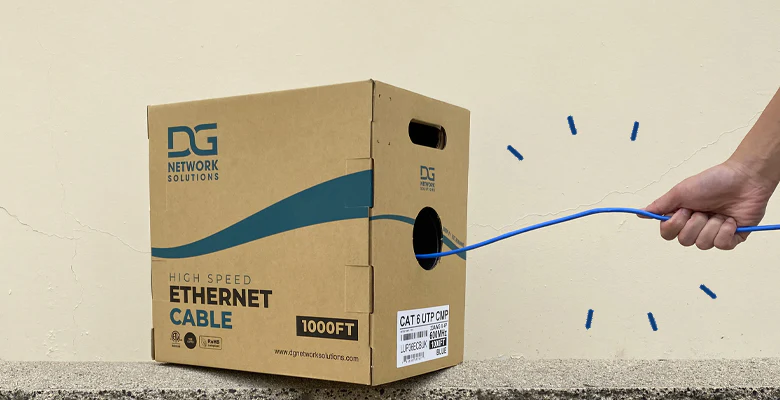
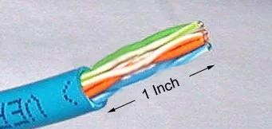
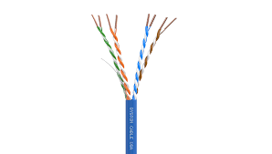
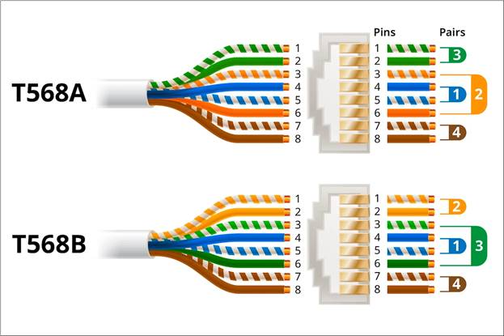
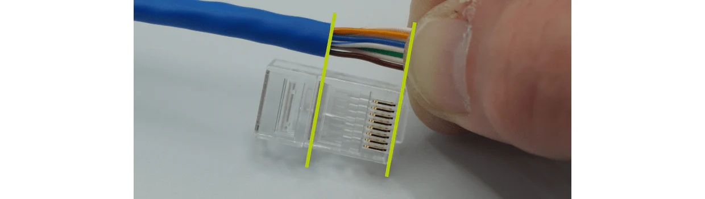
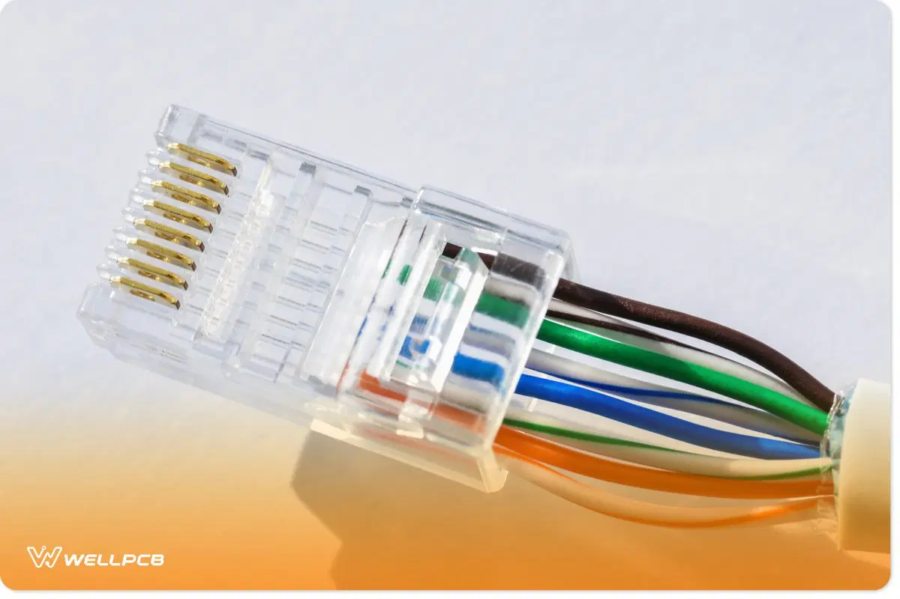
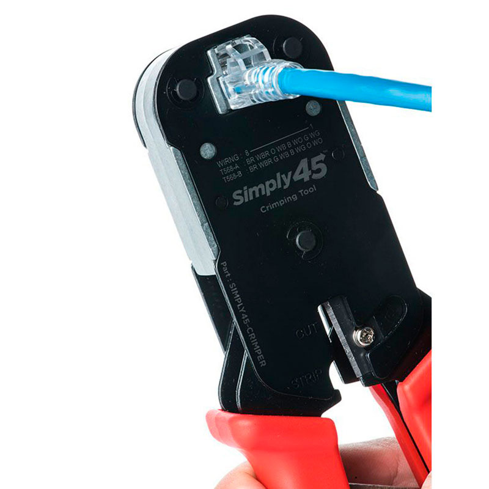
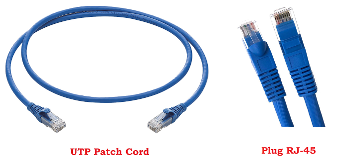
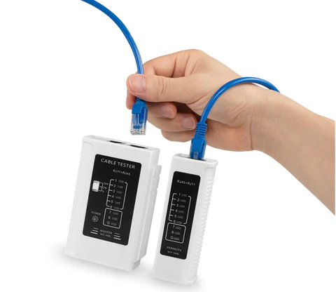

steg 1:
Start med å ta ut kabelen og mål opp hvor lang du vil at kabelen skal være. Klipp kabelen rett av med en kabelklipper eller saks.
steg 2:
Etter du har tatt ut kabelen din, finn en kant og kutt forsiktig av ytterkappen (det hvite rundt). Det kan være litt vanskelig, så pass på at du skjærer forsiktig og ikke treffer ledningene. Kutt ca. 2–3 cm unna kanten.
steg 3:
Du vil nå se fire 2er par med ledninger (åtte ledninger totalt) Løsne de og rett de ut.
steg 4:
Etter å ha rettet ut alle de åtte ledningene og sorter dem i riktig fargerekkefølge. Bruk en av ledningsrekkefølge i bilde
steg 5:
Hold ledningene flatt i riktig rekkefølge og klipp av tupen sånn at de er ca. 1–1.5 cm lange fra der ytterkappen slutter/starter.
steg 6:
Ta ut RJ45-kontakten og skyv forsiktig ledningene inn uten å blande fargerekkefølgen med låsefliken pekt ned. Pass på at hver ledning går helt i sin plass og at ytterkappen(tuppen av ytterkappen) går litt inn i kontakten for å støtte altså holde den bedre på plass.
steg 7:
Sett RJ45-kontakten inn i en krympetang og press den sammen til du kjenner ett click som betyr at pinnene har låst seg fast i lederne dette fester både ledningene og ytterkappen.
steg 8:
Gjenta samme prosessen for den andre enden av kabelen. Pass på at du bruker samme fargerekkefølge i begge endene.
steg 9:
Test kabelen med en kabeltester for å være sikker på at alle ledningene er riktig koblet og at den funker som den skal. Testeren viser om forbindelsen er riktig på alle åtte pinnene.
steg 10:
Når kabelen er testet og fungerer er det bare å kobble til PC eller devicen du vill bruke. Nå har du laget din egen Cat6 Ethernet-kabel! :)